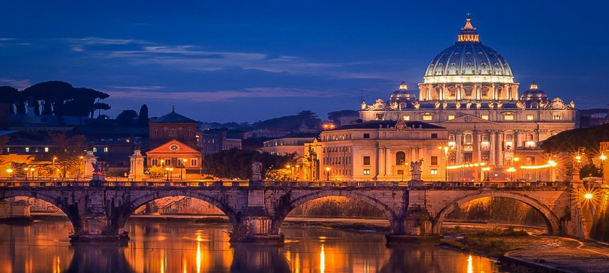
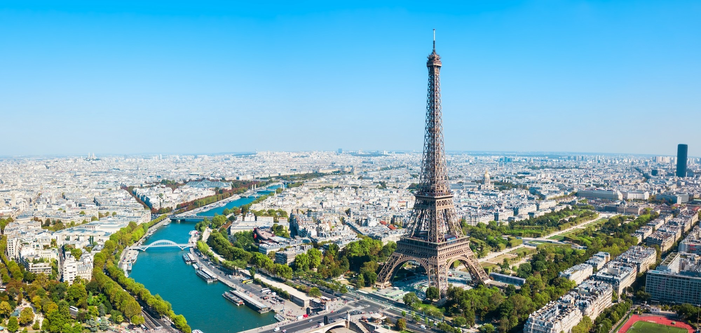
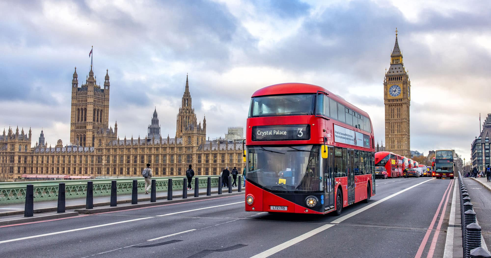

Róma
Az örök város, tele történelemmel, kultúrával és olasz konyhával. Ideális 3–4 napos városlátogatáshoz.
Ajánlott időtartam: 3 nap
Válogass néhány klasszikus európai város közül inspirációként.

Az örök város, tele történelemmel, kultúrával és olasz konyhával. Ideális 3–4 napos városlátogatáshoz.
Ajánlott időtartam: 3 nap

A szerelem, a művészetek és a kávézók városa. Tökéletes választás, ha romantikázni vagy kultúrázni szeretnél.
Ajánlott időtartam: 3–5 nap

Tengerpart, Gaudí épületek és vibráló éjszakai élet – mediterrán hangulat egész évben.
Ajánlott időtartam: 3–4 nap

Modern nagyváros, klasszikus látványosságokkal és rengeteg ingyenes múzeummal. Bármikor jó ötlet.
Ajánlott időtartam: 3–5 nap